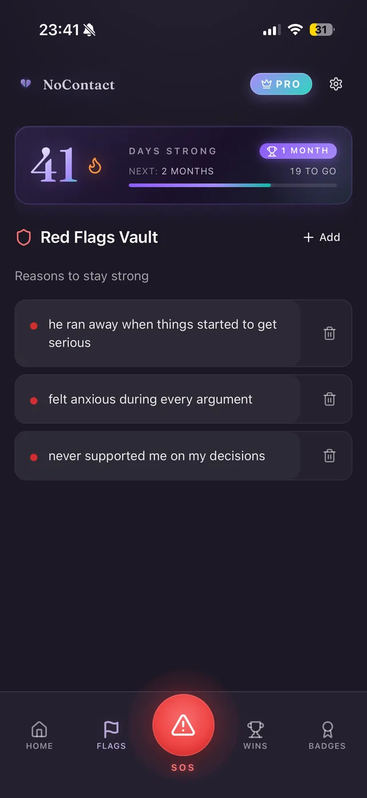
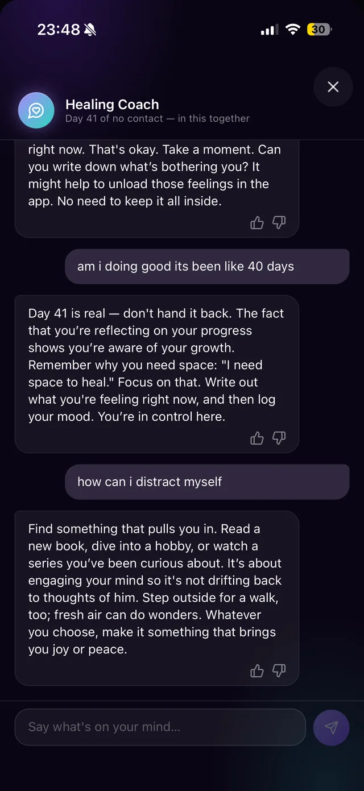
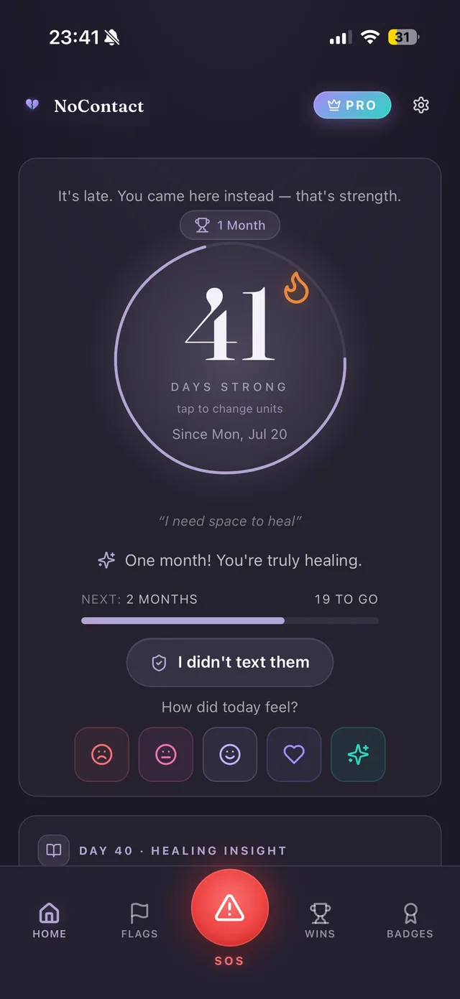
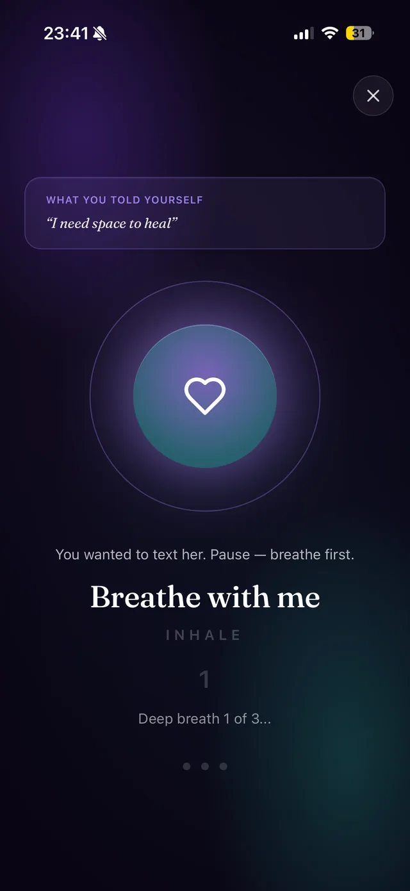
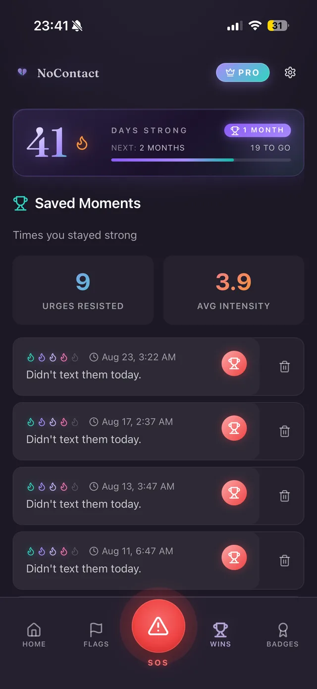

Für den schwersten Abschied
No Contact Tracker zählt deine Tage, fängt dich nachts um 2 mit einem SOS-Knopf auf, zeichnet deine Stimmungskurve auf und gibt deinen ungesendeten Worten einen sicheren Ort.
Tausende zählen schon ihre Tage · Kostenlos starten
Mit dem Handy scannen
bringt dich direkt in deinen Store, iOS oder Android




